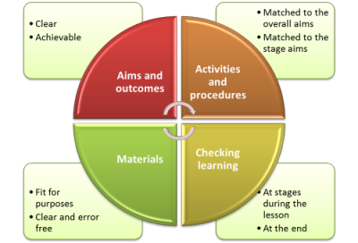
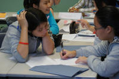
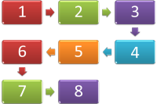

How to write a CELTA lesson plan
|
A poor teacher can teach successfully
with a good plan but a good teacher cannot teach successfully with a
poor plan. |
Here's the picture

We'll take each element of the plan separately and match the content
of the plan to the CELTA assessment criteria.
A lesson can pass or fail on the strength of its plan so this is not a
box-ticking exercise.
The parts of the plan and how they fit together |
The University of Cambridge sets out the requirements for what
is in a CELTA lesson plan in the syllabus document (section 4.2 on page
10).
The sections are:
- a statement of aims
- a class profile
- anticipation of difficulties and suggested solutions
- description of teacher and learner interactions
- details of resources to be used
- staged description of procedures including anticipated timings
We will follow that and suggest what should go into each section although this guide considers the class profile first because that is where planning should begin – with the learners. You cannot sensibly set aims without considering the needs and level of the learners.
|  |
The learners |
All plans start with a consideration of the learners, their needs,
their learning preferences and their interests.
The key question to ask is
What do I need to tell the observer to make it clear that I am considering the learners from the outset of my planning?
On most CELTA courses classes are shared and all the trainees will
teach the same classes.
Do not, however, rely on other people's perceptions (but draw on them).
It is your
view and your response to the group that is most
important.
It is here that you demonstrate your familiarity with the group and the
fact that there are some commonalities to bear in mind when planning for
them. Here's how to do that.
- Nationalities and first languages: make a list and highlight any learners who are the only representatives of a nationality or first language group in the class.
- Level: note here who are the weakest and strongest members of the group. No classes are completely homogenous.
- Why are they learning English? For work, for leisure, for
study etc.?
If you know what the learners need to do with their English, you are well placed to target skills and language they need (and know they need) and that will help the learners to engage with your teaching aims.
Here's an example:
| The learners: | There are usually between 8 and 12
learners in this group and most of them are speakers of French,
German and Italian as a first language. They come from
Ivory Coast, France, Austria and Switzerland. There is one learner, Abdullah, who is the only Arabic speaker (from Jordan) in the group and he struggles to read and write in English but has good oral /aural skills. Jean-Paul has a slight hearing impairment so I will make sure that I am close to him and face him when I am giving key instructions and explanations. The strongest learners are Marie, Franz and Jean-Paul; the weakest overall are Claudia, Lara and Abdullah (but see above). All the learners are living in the UK and need language skills for work and socialising. This lesson on making arrangements will be relevant to them all, therefore. |
That's enough. There is no need, unless the group is very unusual,
to say more here.
There may be an unusual item worth adding to the
list. For example, if the group is particularly heterogeneous, has
split aims and so on. Before you write something about this, ask
yourself if it's really relevant to your lesson. If it isn't,
leave it out.
Aims and objectives |
Depending on the centre at which you are taking CELTA, you may be
asked to distinguish between Aims and Learning Objectives.
Usually the difference is explained as:
An Aim is what you hope to teach but
An Objective is what the learners will be
able to do at the end that they couldn't do at the beginning.
There are two important things to bear in mind:
- Aims and Objectives should be clear.
- Don't say:
I hope the learners will be better at grammar - Do say:
By the end of the lesson the learners will be better able to use the present progressive form to talk about arrangement that exist in the present but apply to the future.
- Don't say:
- Aims and Objectives should be achievable
- At the beginning of a course, in particular, you will only be teaching for short periods so tailor your aims to what you and the learners can achieve in the time available.
- Bear the level in mind.
If, for example, you want to focus on a form such as
I have been running around all day and am exhausted
ask yourself if the learners can deal with the forms of the verb have and the past participle of be as well as forming the -ing form of the verb correctly.
There
is a critical difference between an Aim and a Procedure.
The following are Aims and Objectives:
- At the end of the lesson, the learners will be better able to pronounce the following items: hairdresser, confectioner, library, sports centre, cinema, multi-storey car park and stress the words correctly.
- The learners will be able to understand, use appropriately and pronounce the following 10 lexemes ...
- Students will have gained a better understanding of the nature of verbs followed by gerunds and infinitives and be able to use them confidently
These, however, are Procedures and refer to what you and the learners will do, not what will be achieved:
- Students will exchange ideas about sports and pastimes
- The class will practise making question forms with conditional sentences
- The students will mingle to find someone who has selected the same three adjectives to describe their families
Try not to mix them up!
Here an example of this part of the plan:
| Aims and Objectives: |
|
Difficulties and solutionsLife is what happens while you are making other plans (John Lennon) |
In this part of the plan you need to think about what problems might
arise and how you will deal with them.
Problems can be of three main sorts and you should
think about all of them:
- Problems with the language or skill you are teaching.
Some language items and some subskills are intrinsically difficult to learn and use. For example, pronouncing a word like hairdresser is difficult because of the sound at the beginning, the silence of the final 'r' and remembering to get the stress on the first syllable (/ˈheə.dre.sə/).
Some structures, such as
He should have been more careful
are hard to form because of the two auxiliary verbs (should and have).
Some meanings are difficult to grasp such as the future reference of a past form as in, e.g.:
If you asked him, he might help - Problems with equipment and materials:
What, for example, can go wrong with your laptop or the data projector?
What will you do if you have handouts for 12 learners but 14 turn up? - Problems with topics or activities. (These are generally
referred to as affective issues.)
Is there anything in the topic that might embarrass or offend some learners?
Which students are very shy and don't like taking part in speaking activities?
What will you do if the students simply find a task too difficult or too easy?
Solutions need to be precise not generalised so for example
I will explain
or
I will deal with it
or
I will provide more practice
are not solutions at all but
I will spend a little longer on the drilling phases so
the learners gain confidence and skill stressing the words correctly.
I will also mark the stress clearly on the board like this:
HAIRdresser
I have back-up paper copies of the task
Learners can share the handout and I'll make copies for those
who need them at the end
are all proper solutions.
Here's an example of this part of a plan:
| Problems and solutions: | Problem | Solution |
| The learner may misunderstand the instructions for the last task (because it is complicated) | I will demonstrate the task with Claudia because she is one of the weaker students | |
| The Italian speakers may have trouble pronouncing the short /ɪ/ sound near the end of the -ing forms | I will drill the three of them separately | |
| Maria and Sheena may find it difficult to talk about work problems (because they are not currently in work) | I'll pair them together and may use an alternative topic (family issues) |
|  |
Procedures and interactions |
On some CELTA courses, you may be asked to separate these and Cambridge list them separately but we will consider them together because they are closely connected.
Almost everyone does this in the form of a table, like this:
| Stage | Aim | Procedure | Time | Interaction | Comment and teacher role |
| Stage 1 | To activate the learners' knowledge of the topic | 3-minute buzz groups to come up with 5 items related to weekend activities | 4 minutes |
SS-SS (groups of 4) |
Separate the groups as much as possible
so they cannot overhear each other. I will listen to each group in turn and note one interesting activity from each for a short feedback. |
| Stage 3 | To prepare for the pair work activity and provide written practice of the verbs and nouns | Individually, learners write down three things they are doing this weekend, e.g., seeing friends, eating out at a restaurant, going to the cinema | 8 minutes | S (individually) | Monitor and assist with the lexis and the collocating verbs |
| Stage 6 |
Students mingle to ask and answer
questions using the form, e.g., What are you doing on Saturday? I'm having lunch in the park etc. |
To provide semi-controlled practice of using the forms naturally. | 10 minutes | S-S (mingle) | I will make sure I
am alert to any false production of the target language (form
and pronunciation) and intervene immediately. This is a check for me of learning and progress so far. |
There are two guides on this site that are helpful in selecting and designing tasks and activities when planning the procedures in a lesson. Both guides will open in a new tab:
-
The
guide to activity types. This guide covers the
concepts of three kinds of activity:
- awareness-raising activities
- skills-getting activities
- skills-using activities
-
The
guide to task types focuses on specific task types and
covers, with examples:
- matching tasks
- gap-fill tasks
- role-play tasks
- skeleton tasks
- listing and prioritising tasks
- discussion and debate tasks
- transformation and transfer tasks
- information and information-gap tasks
Materials and Resources |
All you need to do here is
- List the materials and resources you will use
- Supply a copy of everything just as it will be used in the lesson. You must source your materials conventionally, even if you have produced them yourself.
- Make sure that your materials are free from errors.
The planning paradox |
While there are many good reasons to have a plan, there are also ways in which a plan can actually get in the way of responding to your learners. This calls for a little flexibility.
A map is not the territory. Do not confuse the model (your plan) with the reality (your lesson).
While both focus and variety can be planned, flexibility, by
definition, cannot. What the teacher does when things do not go
according to plan is just as important as knowing what to put in the
plan in the first place.
However good the plan, and however carefully you have thought about your
learners, their needs and their preferences, something will arise in
almost all lessons which was not predicted in your plan.
It may, for example, turn out that the learners' mastery of a
language item which you had assumed is not as secure as it needs to be. This may
require quite a serious diversion from your plan if the lesson
depends on their knowing how to handle the language in question.
It may also be the case, on the other hand, that the learners are
already aware of and can handle some of the targets of the lesson.
If that occurs, you would be very unwise to continue with the
teaching procedures you had planned for these targets.
The moral of all this is: Teach the learners, not the plan.
| Related guides | |
| planning | for a basic guide to planning to remind you of the most important aspects |
| activity types | of three sorts: awareness raising, skill getting and skill using |
| task types | for some ideas of what to include in the activity phases |
| grouping learners | for some consideration of when it pays to take the time to re-group learners appropriately |
| the CELTA Handbook | contains a bit more on planning and an example of a completed lesson plan |